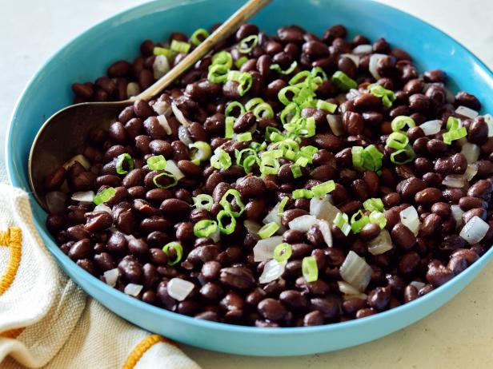

Black Beans

Description
Mexican inspired black beans that can be eaten in various ways such as on rice, tacos or burritos.
Ingredients
- 1/4 C onion
- 1/4C tomato
- 1 tbs garlic
- 1 can of black beans
- 1tsp oil
- 1/2 tsp oregano and salt and pepper
Steps
- Add tomatoes, onion and garlic to pan for 5 mins
- Add beans
- Add water and simmer until mushy